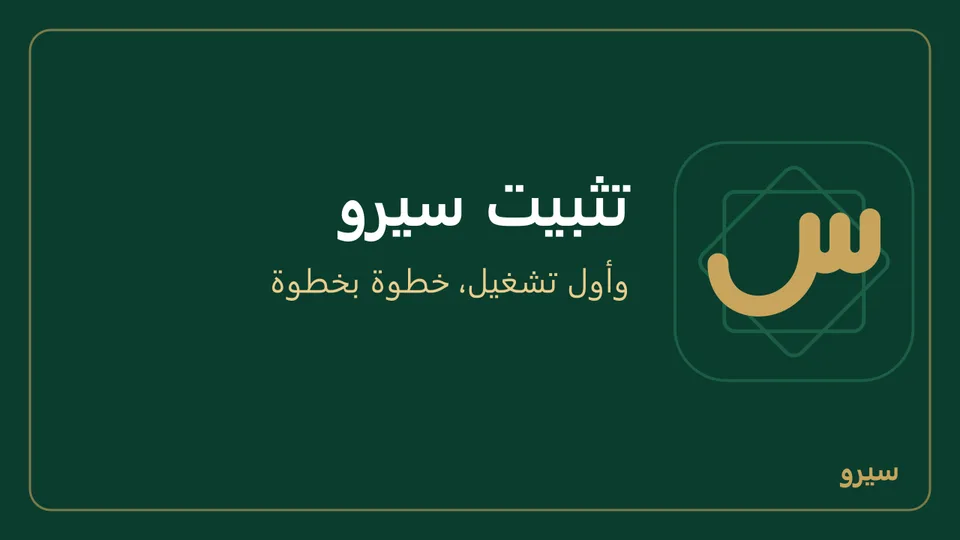
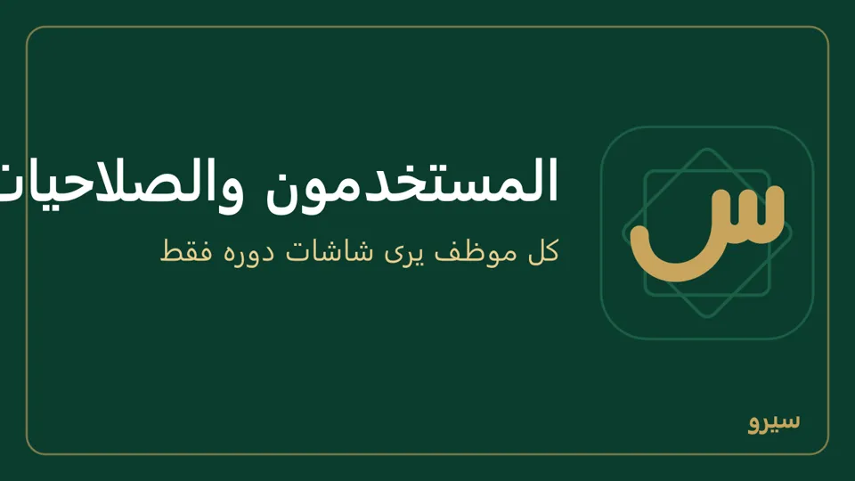
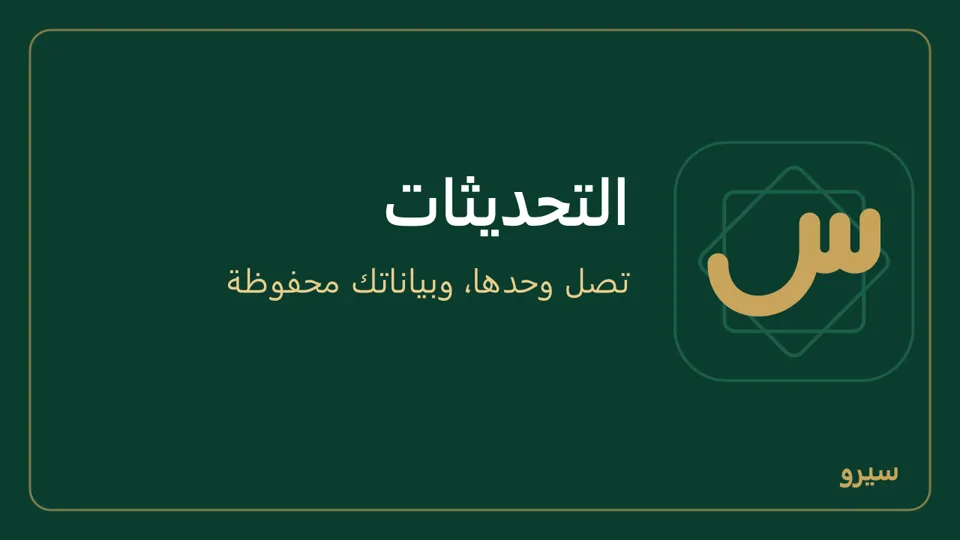

البداية
ثبّت البرنامج، أجب عن أسئلة قصيرة عن نشاطك، وابدأ العمل. كل شيء يبقى على جهازك ويعمل بلا إنترنت.
- مجاني؟ وعلى كم جهاز؟
- التثبيت على الكمبيوتر
- أول تشغيل
- التنقل في البرنامج
- خريطة البرنامج على الكمبيوتر
- المستخدمون والصلاحيات
- اللغة والمظهر
- التحديثات
مجاني؟ وعلى كم جهاز؟
- سيرو مجاني كله: بلا اشتراك ولا تفعيل ولا حد للأجهزة أو المستخدمين، لمحل أو شركة. شارك ملف التثبيت مع من تريد كما هو. الشروط في شروط الاستخدام.
- يعمل بلا إنترنت: البيانات على جهازك. الإنترنت يلزم فقط للتحديثات والمساعد والمزامنة عبر Google Drive.
- على ويندوز 10 أو 11 (التثبيت) وعلى أندرويد (تطبيق الجوال).
التثبيت على الكمبيوتر
- نزّل البرنامج من رابط التحميل وشغّل الملف. يحتاج ويندوز 10 أو 11.
- إن ظهرت رسالة «حمى Windows جهاز الكمبيوتر» اضغط مزيد من المعلومات ثم تشغيل على أي حال. تظهر للبرامج الجديدة فقط.
- يفتح البرنامج وحده بعد انتهاء التثبيت.

على الجوال: من Google Play: تثبيت التطبيق.
أول تشغيل
- اختر لغة الواجهة: العربية أو English.
- أجب عن الأسئلة (نوع النشاط، عدد العاملين، الفروع، طريقة البيع…)، أو اختر قالباً جاهزاً مثل بقالية / سوبرماركت أو ورشة / مصنع صغير أو صالون حلاقة / تجميل (القص والحلاقة أصناف بلا مخزون (خدمة أو منتج مركّب) تُباع من نقطة البيع، والمستحضرات من المخزون). القالب يشغّل أقساماً فقط، فتشغّل غيرها أو توقفها لاحقاً من الإعدادات ← الأقسام.
- تظهر صفحة هذا ما سنفعّله لك بالأقسام المناسبة لنشاطك. أبقِها كما هي أو غيّرها، فكل شيء يتغيّر لاحقاً من الإعدادات.
- اكتب اسم المحل، ثم اسمك واسم الدخول وكلمة المرور لحساب المالك، ثم كلمة سر النسخ الاحتياطي مرتين (8 أحرف على الأقل): بها تفتح الدخول إن نسيت كلمة المرور، وبها تُشفَّر النسخ الاحتياطية، فاكتبها على ورقة واحفظها بعيداً عن الكمبيوتر. واضغط ابدأ.
- اقرأ الرخصة، علّم قرأت رخصة الاستخدام وأوافق عليها واضغط موافق، ابدأ. تظهر مرة واحدة فقط.
- في الصفحة الرئيسية ابدأ من هنا حتى تضيف أول صنف أو مستند: أصنافك (أو استيرادها من Excel)، ثم العملاء والموردون، ثم أول بيع.
- كمبيوتر في فرع لشركة موجودة: اضغط هذا الجهاز فرع لنظام موجود أعلى الشاشة بدل الأسئلة (كمبيوتر فرع).
على الجوال: اللغة أولاً، ثم محل مستقل على هذا الجوال (كيف)، أو جهاز تابع لشركتي (الربط بكمبيوتر الشركة)، أو جهاز في شركة تتزامن عبر Google Drive (كيف).
خريطة البرنامج على الكمبيوتر
كل سطر في القائمة الجانبية ورابط شرحه. يظهر لك ما فعّلته في الأقسام وما يسمح به دورك.
- البيع والشراء: النقل والأسطول، العمليات اليومية، نقطة البيع، المطعم، المبيعات، ملخص اليوم، العروض، قوائم الأسعار، الفوترة المجدولة، المتجر الإلكتروني، المشتريات، العملاء والموردون، المندوبون، العملاء المحتملون.
- المخزون والإنتاج: الأصناف، المخزون ومنه الجرد، التصنيع والتفكيك، الجودة، الصيانة والأصول.
- المال والإدارة: المحاسبة، السندات، دليل الحسابات، الموظفون والرواتب، المشاريع، الموافقات، سير العمل، نقل البيانات.
- التقارير: التقارير، القوائم المالية، لوحة الهاتف.
- سجل المساعدة: ملاحظاتك الصوتية للمطوّر وردوده عليها (سجل المساعدة).
- أسفل القائمة: دليل الاستخدام وشروحات بالفيديو وتواصل معنا وحول البرنامج.
- الإعدادات (من الشريط العلوي): الأقسام، قوالب الطباعة، الحقول المخصصة، نقطة البيع، الولاء، التوطين، المزامنة، التكامل ومنه النسخ الاحتياطي، التدقيق، المستخدمون.
المستخدمون والصلاحيات
- افتح الإعدادات ← المستخدمون.
- اكتب الاسم واسم الدخول وكلمة المرور (اسم الدخول أحرف لاتينية وأرقام ونقطة أو شرطة، بلا مسافات)، واختر الدور: محاسب، مبيعات، أمين مستودع، كاشير، إنتاج، أو موارد بشرية.
- اضغط إضافة. يرى كل مستخدم أقسام دوره فقط.
- موظف ترك العمل: إيقاف بجانب اسمه. لا يُحذف، فتبقى عملياته باسمه.
- دور تغيّر: اختره بجانب اسمه ثم حفظ الدور؛ يبقى اسم الدخول وعملياته كما هي. لا تغيّر دورك أنت ولا توقف آخر مالك فعّال، وكلمة مرورك تتغيّر من حسابي لا من هذه القائمة.
- صلاحيات يمنحها المالك تحت الحقول الحساسة: لا يملكها أي دور حتى تعلّمها ثم حفظ. مرتجع من نقطة البيع يسمح للدور (الكاشير مثلاً) بتسجيل المرتجع من نقطة البيع.
- كلمات المرور والتحقق بخطوتين والجلسات: الأمان.

على الجوال: المستخدمون من مجموعة الإدارة. على جوال مستقل: أكثر من شخص على جوال واحد.
اللغة والمظهر
من الشريط العلوي: زر اللغة وزر المظهر. ولكل مستخدم لغته: لغة الواجهة في حسابي، أو يضبطها المالك في الإعدادات ← المستخدمون، وتُطبَّق حين يدخل على أي جهاز.
على الجوال: لغة التطبيق.
التحديثات
- التحديثات تصل وحدها حين يتصل الجهاز بالإنترنت، ويسألك البرنامج متى يعيد التشغيل.
- قبل أن يعمل الإصدار الجديد يأخذ البرنامج نسخة من بياناتك.
- فرع بلا إنترنت يأخذ التحديثات من كمبيوتر الشركة: الإعدادات ← المزامنة ← مصدر التحديثات.
- ماذا تغيّر في كل إصدار: ما الجديد.

على الجوال: يتحدّث التطبيق من Google Play (تثبيت التطبيق).